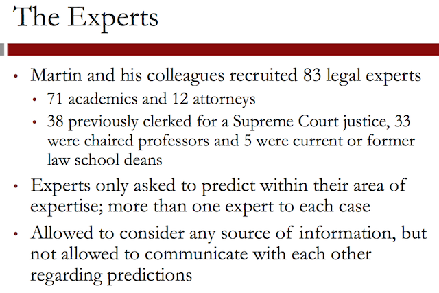

Week 4. Classification and Regression Trees
Regression trees and Random forest are more interpretable methods used in binary (clustering) applications.
1 Judge, Jury, and Classifier: An Introduction to Trees
Sources
The images in this video of the Scales of Justice, the United States Supreme Court Building, and the United States Supreme Court Justices all come from Wikimedia Commons.
Introduction
This seems like a very unconventional use of analytics, but in 2002 a group of political science and law academics decided to test if a model can do better than a group of experts at predicting the decisions of the Supreme Court. In this case, a very interpretable analytics method was used, called classification and regression trees.

Cases start at the district courts, where an initial decision is made about the case. The circuit courts hear appeals from the district courts, and can change the decision that was made. The Supreme Court is the highest level in the American legal system and makes the final decision on cases.

This image shows the nine Supreme Court justices from the time period 1994 through 2005. This was the longest period of time with the same set of justices in over 180 years.
There have been many significant and groundbreaking decisions made by the Supreme Court. These are a few notable decisions that were made.

In 1942, the Supreme Court decided on the Wickard v. Filburn case. This case recognized the power of the federal government to regulate economic activity.
Filburn was a farmer, who was growing wheat for on-farm consumption. However, the US had established limits on wheat production, and Filburn was exceeding those limits. So even though the extra wheat he was producing was for his own use and he had no intention of selling it, he was forced to destroy it.
In 1973, the Supreme Court decided on the Roe v. Wade case, one of the most well-known cases to this day. They decided to legalize abortion, and by doing this, prompted a national debate that continues today about the legality of abortion.
In 2000, the Supreme Court actually decided the outcome of the presidential election. The race was so close in the state of Florida, that a recount of the ballots was required. But the Florida Secretary of State certified that President Bush was the winner before the recount could be completed.
The case then went to the Supreme Court where it was ruled that all ballots needed to be recounted. But since this could not be done before the winner had to be declared, President Bush won the state of Florida, and thus, the presidency.
A very recent case from 2012 dealt with the Patient Protection and Affordable Care Act, commonly called ObamaCare, which requires most Americans to have health insurance. The Supreme Court upheld this requirement.

Since non-profits, voters, and anybody interested in long-term planning can benefit from knowing the outcomes of the Supreme Court cases before they happen, legal academics and political scientists regularly make predictions of Supreme Court decisions from detailed studies of the cases and individual justices.
They wanted to see if an analytical model could outperform the expertise and intuition of a large group of experts. Martin used a method called classification and regression trees, or CART. In this case, the outcome is binary.

1.1 Quick Question (1 point possible)
How much data do you think Andrew Martin should use to build his model?
1.1.1 Answer
[X]Information from all cases with the same set of justices as those he is trying to predict. Data from cases where the justices were different might just add noise to our problem.[ ]Only information from the most recent year. Since the justices change every year, only this information would be useful.
Explanation
Andrew Martin should use all data from the cases with the same set of justices. The justices do not change every year, and typically you want to use as much data as you have available.
1.2 Video 2: CART
To predict the outcomes of the Supreme Court, Martin used cases from 1994 through 2001. He chose this period of time because the Supreme Court was composed of the same nine justices that were justices when he made his predictions in 2002.

This was a very rare data set, since as I mentioned earlier, this was the longest period of time with the same set of justices in over 180 years. This allowed Martin to use a larger data set then might have been available if he was doing this experiment at a different time.
- The circuit court of origin is the circuit or lower court where the case came from. There are 13 different circuit courts in the United States. The 1st through 11th and Washington, DC courts are defined by region. And the federal court is defined by the subject matter of the case.
- The issue area of the case gives each case a category, like civil rights or federal taxation.
- The type of petitioner and type of respondent define two parties in the case. Some examples are the United States, an employer, or an employee.
- The ideological direction of the lower court decision describes whether the lower court made what was considered a liberal or a conservative decision.
- The last variable indicates whether or not the petitioner argued that a law or practice was unconstitutional.
To collect this data, Martin and his colleagues read through all of the cases and coded the information. Some of it, like the circuit court, is straightforward. But other information required a judgment call, like the ideological direction of the lower court.
1.2.1 Logistic regression interpretation issues
Now that we have our data and variables, we are ready to predict the decisions of Justice Stevens.
We can use logistic regression, and we get a model where some of the most significant variables are:
whether or not the case is from the 2nd circuit court, with a coefficient of 1.66; whether or not the case is from the 4th circuit court, with a coefficient of 2.82; and whether or not the lower court decision was liberal, with a coefficient of (negative) -1.22.
While this tells us that the case being from the 2nd or 4th circuit courts is predictive of Justice Stevens reversing the case, and the lower court decision being liberal is predictive of Justice Stevens affirming the case, it's difficult to understand which factors are more important due to things like the scales of the variables, and the possibility of multicollinearity.
It's also difficult to quickly evaluate what the prediction would be for a new case. So instead of logistic regression, Martin and his colleagues used a method called classification and regression trees, or CART.
1.2.2 CART

This method builds what is called a tree by splitting on the values of the independent variables. To predict the outcome for a new observation or case, you can follow the splits in the tree and at the end, you predict the most frequent outcome in the training set that followed the same path.
Some advantages of CART are that it does not assume a linear model, like logistic regression or linear regression, and it's a very interpretable model.
1.2.3 Example

This plot shows sample data for two independent variables, x and y, and each data point is colored by the outcome variable, red or gray.
CART tries to split this data into subsets so that each subset is as pure or homogeneous as possible. The first three splits that CART would create are shown here. Then the standard prediction made by a CART model is just the majority in each subset.
If a new observation fell into one of these two subsets (RED), then we would predict red, since the majority of the observations in those subsets are red.
However, if a new observation fell into one of these two subsets (GRAY), we would predict gray, since the majority of the observations in those two subsets are gray.

A CART model is represented by what we call a tree. The tree for the splits we just generated is shown on the right. The first split tests whether the variable x is less than 60.
If yes, the model says to predict red, and if no, the model moves on to the next split. Then, the second split checks whether or not the variable y is less than 20.
If no, the model says to predict gray, but if yes, the model moves on to the next split. The third split checks whether or not the variable x is less than 85.
If yes, then the model says to predict red, and if no, the model says to predict gray. There are a couple things to keep in mind when reading trees.
Important
There are a couple things to keep in mind when reading trees. In this tree, and for the trees we'll generate in R, a yes response is always to the left and a no response is always to the right. Also, make sure you always start at the top of the tree. The x less than 85 split only counts for observations for which x is greater than 60 and y is less than 20.
1.3 Quick Question (2 points possible)
Suppose that you have the following CART tree:
1.3.1 Question a
How many splits are in this tree?
1.3.1.1 Answer
3 splits.
1.3.2 Question b
For which data observations should we predict "Red", according to this tree? Select all that apply.
1.3.2.1 Answer
[X]If X is less than 60, and Y is any value.[ ]If X is greater than or equal to 60, and Y is greater than or equal to 20.[ ]If X is greater than or equal to 85, and Y is less than 20.[X]If X is greater than or equal to 60 and less than 85, and Y is less than 20.
Explanation
- This tree has three splits.
- The first split says to predict "Red" if X is less than 60, regardless of the value of Y.
- Otherwise, we move to the second split. The second split says to
check the value of Y
- if it is greater than or equal to 20, predict "Gray".
- Otherwise, we move to the third split. This split checks the value
of X again.
- If X is less than 85 (and greater than or equal to 60 by the first split) and Y is less than 20, then we predict "Red". Otherwise, we predict "Gray".
1.4 Video 3: Splitting and Predictions
In R, this is called the minbucket parameter, for the minimum number of observations in each bucket or subset.
The smaller minbucket is, the more splits will be generated. But if it's too small, overfitting will occur. This means that CART will fit the training set almost perfectly. But this is bad because then the model will probably not perform well on test set data or new data.
On the other hand, if the minbucket parameter is too large, the model will be too simple and the accuracy will be poor.
We will learn about a nice method for selecting the stopping parameter.
In the Supreme Court case, we'll be classifying observations as either affirm or reverse. Instead of just taking the majority outcome to be the prediction, we can compute the percentage of data in a subset of each type of outcome.
As an example, if we have a subset with 10 affirms and two reverses, then 87% of the data is affirm. Then, just like in logistic regression, we can use a threshold value to obtain our prediction.
For this example, we would predict affirm with a threshold of 0.5 since the majority is affirm. But if we increase that threshold to 0.9, we would predict reverse for this example.
Then by varying the threshold value, we can compute an ROC curve and compute an AUC value to evaluate our model.
1.5 Quick Question (1 point possible)
Suppose you have a subset of 20 observations, where 14 have outcome A and 6 have outcome B. What proportion of observations have outcome A?
writeLines("\n :: Proportion of observations of A:") A <- 14; B <- 6; A / (A + B)
:: Proportion of observations of A: [1] 0.7
1.5.1 Answer
Explanation
The fraction of observations that have outcome A is
$$ \frac{14}{14 + 6} = 0.7. $$
1.6 Quick Question (3 points possible)
The following questions ask about the subset of 20 observations from the previous question.
1.6.1 Question
If we set the threshold to 0.25 when computing predictions of outcome A, will we predict A or B for these observations?
1.6.1.1 Answer
[X]A[ ]B
1.6.2 Question
If we set the threshold to 0.5 when computing predictions of outcome A, will we predict A or B for these observations?
1.6.2.1 Answer
[X]A[ ]B
1.6.3 Question
If we set the threshold to 0.75 when computing predictions of outcome A, will we predict A or B for these observations?
1.6.3.1 Answer
[ ]A[X]B
1.7 Video 4: CART in R
In the next few videos, we'll be using the dataset stevens.csv to build trees in R. Please download the dataset to follow along. This data comes from the Supreme Court Forecasting Project website.
An R script file with all of the R commands used in this lecture can be downloaded here.
1.7.1 Download the data sets
In this part we can download the data
library(parallel) if(!file.exists("../data")) { dir.create("../data") } fileUrl <- "https://courses.edx.org/asset-v1:MITx+15.071x_2a+2T2015+type@asset+block/stevens.csv" fileName <- "stevens.csv" dataPath <- "../data" filePath <- paste(dataPath, fileName, sep = "/") if(!file.exists(filePath)) { download.file(fileUrl, destfile = filePath, method = "curl") } list.files("../data")
[1] "AnonymityPoll.csv" "BoeingStock.csv" [3] "CPSData.csv" "CocaColaStock.csv" [5] "CountryCodes.csv" "FluTest.csv" [7] "FluTrain.csv" "GEStock.csv" [9] "IBMStock.csv" "MetroAreaCodes.csv" [11] "NBA_test.csv" "NBA_train.csv" [13] "PollingData.csv" "PollingData_Imputed.csv" [15] "ProcterGambleStock.csv" "README.md" [17] "USDA.csv" "WHO.csv" [19] "WHO_Europe.csv" "baseball.csv" [21] "climate_change.csv" "framingham.csv" [23] "loans.csv" "loans_imputed.csv" [25] "mvtWeek1.csv" "parole.csv" [27] "pisa2009test.csv" "pisa2009train.csv" [29] "quality.csv" "songs.csv" [31] "stevens.csv" "wine.csv" [33] "wine_test.csv"
1.7.2 Load the data set
writeLines(" Loading data into their data frames.") stevens <- read.table("../data/stevens.csv", sep = ",", header = TRUE) str(stevens) summary(stevens)
Loading data into their data frames.
'data.frame': 566 obs. of 9 variables:
$ Docket : Factor w/ 566 levels "00-1011","00-1045",..: 63 69 70 145 97 181 242 289 334 436 ...
$ Term : int 1994 1994 1994 1994 1995 1995 1996 1997 1997 1999 ...
$ Circuit : Factor w/ 13 levels "10th","11th",..: 4 11 7 3 9 11 13 11 12 2 ...
$ Issue : Factor w/ 11 levels "Attorneys","CivilRights",..: 5 5 5 5 9 5 5 5 5 3 ...
$ Petitioner: Factor w/ 12 levels "AMERICAN.INDIAN",..: 2 2 2 2 2 2 2 2 2 2 ...
$ Respondent: Factor w/ 12 levels "AMERICAN.INDIAN",..: 2 2 2 2 2 2 2 2 2 2 ...
$ LowerCourt: Factor w/ 2 levels "conser","liberal": 2 2 2 1 1 1 1 1 1 1 ...
$ Unconst : int 0 0 0 0 0 1 0 1 0 0 ...
$ Reverse : int 1 1 1 1 1 0 1 1 1 1 ...
Docket Term Circuit Issue
00-1011: 1 Min. :1994 9th :122 CriminalProcedure:132
00-1045: 1 1st Qu.:1995 5th : 53 JudicialPower :102
00-1072: 1 Median :1997 11th : 49 EconomicActivity : 98
00-1073: 1 Mean :1997 7th : 47 CivilRights : 74
00-1089: 1 3rd Qu.:1999 4th : 46 DueProcess : 43
00-121 : 1 Max. :2001 8th : 44 FirstAmendment : 39
(Other):560 (Other):205 (Other) : 78
Petitioner Respondent LowerCourt
OTHER :175 OTHER :177 conser :293
CRIMINAL.DEFENDENT : 89 BUSINESS : 80 liberal:273
BUSINESS : 79 US : 69
STATE : 48 CRIMINAL.DEFENDENT: 58
US : 48 STATE : 56
GOVERNMENT.OFFICIAL: 38 EMPLOYEE : 28
(Other) : 89 (Other) : 98
Unconst Reverse
Min. :0.0000 Min. :0.0000
1st Qu.:0.0000 1st Qu.:0.0000
Median :0.0000 Median :1.0000
Mean :0.2473 Mean :0.5459
3rd Qu.:0.0000 3rd Qu.:1.0000
Max. :1.0000 Max. :1.0000
Now, let's take a look at our data using the str function. We have
566 observations, or Supreme Court cases, and nine different
variables.
Docket is just a unique identifier for each case, and Term is the year of the case. Then we have our six independent variables: the Circuit court of origin, the Issue area of the case, the type of Petitioner, the type of Respondent, the lower court LowerCourt direction, and whether or not the petitioner argued that a law or practice was unconstitutional Unconst. The last variable is our dependent variable, whether or not Justice Stevens voted to reverse the case: 1 for reverse, and 0 for affirm.
Now before building models, we need to split our data into a training set and a testing set.
writeLines("\n :: Split the data:") library(caTools) set.seed(3000) spl <- sample.split(stevens$Reverse, SplitRatio = 0.7) Train <- subset(stevens, spl == TRUE) Test <- subset(stevens, spl == FALSE) writeLines("\n :: Dimensions of the training set:") dim(Train) writeLines("\n :: Dimensions of the testing set:") dim(Test)
:: Split the data: :: Dimensions of the training set: [1] 396 9 :: Dimensions of the testing set: [1] 170 9
Now, we're ready to build our CART model. First we need to install and
load the rpart package and the rpart plotting package.
writeLines("\n :: Install new package: rpart ...") ## install.packages('rpart', repos='http://cran.rstudio.com/') ## writeLines("\n :: Install new package: rpart.plot ...") ## install.packages('rpart.plot', repos='http://cran.rstudio.com/') writeLines("\n :: NOTE: Please comment after install once...") writeLines("\n :: Loading rpart and rpart.plot...") library(rpart) library(rpart.plot) writeLines("\n :: rpart and r.part.plot libraries loaded...")
:: Install new package: rpart ... :: NOTE: Please comment after install once... :: Loading rpart and rpart.plot... :: rpart and r.part.plot libraries loaded...
1.7.3 Building the CART model
Now we can create our CART model using the rpart function.
writeLines("\n :: CART model DONE...") StevensTree <- rpart(Reverse ~ Circuit + Issue + Petitioner + Respondent + LowerCourt + Unconst, data = Train, method = "class", minbucket = 25)
:: CART model DONE...
Figure 16: CART model for the Stevens prediction.
The last argument we'll give is minbucket = 25. This limits the tree
so that it doesn't overfit to our training set. We selected a value of
25, but we could pick a smaller or larger value.
If you're not sure what the abbreviations are, you could create a table of the variable to see all of the possible values.
1.7.4 Making predictions in the testing set
Comparing this to a logistic regression model, we can see that it's very interpretable. A CART tree is a series of decision rules which can easily be explained. Now let's see how well our CART model does at making predictions for the test set.
And we'll add a third argument here, which is ~type = "class"~. We need to give this argument when making predictions for our CART model if we want the majority class predictions. This is like using a threshold of \(0.5\).
We'll see in a few minutes how we can leave this argument out and still get probabilities from our CART model.
writeLines("\n :: Make predictions:") PredictCART <- predict(StevensTree, newdata = Test, type = "class") table(Test$Reverse, PredictCART) writeLines("\n :: Overall accuracy:") (41+71)/(41+36+22+71)
:: Make predictions:
PredictCART
0 1
0 41 36
1 22 71
:: Overall accuracy:
[1] 0.6588235
Now let's compute the accuracy of our model by building a confusion
matrix. So we'll use the table function, and first give the true
outcome values– Test$Reverse, and then our predictions,
PredictCART.
So the accuracy of our CART model is \(0.659\).
If you were to build a logistic regression model, you would get an accuracy of 0.665 and a baseline model that always predicts Reverse, the most common outcome, has an accuracy of 0.547. So our CART model significantly beats the baseline and is competitive with logistic regression.
Lastly, to evaluate our model, let's generate an ROC curve for our CART model using the ROCR package.
writeLines("\n :: ROC curve:") library(ROCR) PredictROC <- predict(StevensTree, newdata = Test) head(PredictROC) pred <- prediction(PredictROC[,2], Test$Reverse) perf <- performance(pred, "tpr", "fpr")
:: ROC curve:
0 1
1 0.3035714 0.6964286
3 0.3035714 0.6964286
4 0.4000000 0.6000000
6 0.4000000 0.6000000
8 0.4000000 0.6000000
21 0.3035714 0.6964286
PredictROC
For each observation in the test set, it gives two numbers which can be thought of as the probability of outcome 0 and the probability of outcome 1. More concretely, each test set observation is classified into a subset, or bucket, of our CART tree.
These numbers give the percentage of training set data in that subset with outcome 0 and the percentage of data in the training set in that subset with outcome 1.
Now we need to use the performance function, where the first argument is the outcome of the prediction function, and then the next two arguments are true positive rate and false positive rate, what we want on the x and y-axes of our ROC curve.
Figure 17: The ROC curve for the justice Stevens.
1.8 Quick Question (3 points possible)
1.8.1 Question a
Compute the AUC of the CART model from the previous video, using the following command in your R console:
writeLines("\n :: The AUC for the CART:") as.numeric(performance(pred, "auc")@y.values)
:: The AUC for the CART: [1] 0.6927105
What is the AUC?
The AUC for the CART = 0.6927105.
1.8.2 Question b
Now, recall that in Video 4, our tree had 7 splits. Let's see how this changes if we change the value of minbucket.
First build a CART model that is similar to the one we built in Video 4, except change the minbucket parameter to 5. Plot the tree.
StevensTree2 <- rpart(Reverse ~ Circuit + Issue + Petitioner + Respondent + LowerCourt + Unconst, data = Train, method = "class", minbucket = 5) writeLines("\n :: CART model 2 DONE...")
:: CART model 2 DONE...
Figure 18: CART court model with a minbucket of 5.
How many splits does the tree have?
1.8.2.1 Answer
The tree have 16 splits.
1.8.3 Question c
Now build a CART model that is similar to the one we built in Video 4, except change the minbucket parameter to 100. Plot the tree.
StevensTree3 <- rpart(Reverse ~ Circuit + Issue + Petitioner + Respondent + LowerCourt + Unconst, data = Train, method = "class", minbucket = 100) writeLines("\n :: CART model 3 DONE...")
:: CART model 3 DONE...
Figure 19: CART court model with a minbucket of 5.
How many splits does the tree have?
1.8.3.1 Answer
This tree have only 1 split.
1.9 Video 5: Random Forests
Important Note: In this video, we install the package randomForest. If you get an installation warning that says:
"Warning: cannot remove prior installation of packages 'randomForest'", please try quitting and re-starting R.
writeLines("\n :: Install new package: randomForest ...") ## install.packages('randomForest', repos='http://cran.rstudio.com/') writeLines("\n :: NOTE: Please comment after install once...") library(randomForest) writeLines("\n :: Library randomForest loaded...")
:: Install new package: randomForest ... :: NOTE: Please comment after install once... :: Library randomForest loaded...
We'll introduce a method that is similar to CART called random forests. This method was designed to improve the prediction accuracy of CART and works by building a large number of CART trees. Unfortunately, this makes the method less interpretable than CART, so often you need to decide if you value the interpretability or the increase in accuracy more.
To make a prediction for a new observation, each tree in the forest votes on the outcome and we pick the outcome that receives the majority of the votes.

So how does random forests build many CART trees?
Random forests only allows each tree to split on a random subset of the available independent variables, and each tree is built from what we call a bagged or bootstrapped sample of the data. This just means that the data used as the training data for each tree is selected randomly with replacement.

Suppose we have five data points in our training set. We'll call them 1, 2, 3, 4, and 5. For the first tree, we'll randomly pick five data points randomly sampled with replacement.
So the data could be 2, 4, 5, 2, and 1. Each time we pick one of the five data points regardless of whether or not it's been selected already. These would be the five data points we would use when constructing the first CART tree.
Then we repeat this process for the second tree. This time the data set might be 3, 5, 1, 5, and 2. And we would use this data when building the second CART tree. Then we would repeat this process for each additional tree we want to create.
So since each tree sees a different set of variables and a different set of data, we get what's called a forest of many different trees. Just like CART, random forests has some parameter values that need to be selected. The first is the minimum number of observations in a subset, or the minbucket parameter from CART.
When we create a random forest in R, this will be called nodesize. A smaller value of nodesize, which leads to bigger trees, may take longer in R. Random forests is much more computationally intensive than CART. The second parameter is the number of trees to build, which is called ntree in R. This should not be set too small, but the larger it is the longer it will take. A couple hundred trees is typically plenty. A nice thing about random forests is that it's not as sensitive to the parameter values as CART is.
For random forests, as long as the selection is reasonable, it's OK.
writeLines("\n :: Build random forest model:") StevensForest <- randomForest(Reverse ~ Circuit + Issue + Petitioner + Respondent + LowerCourt + Unconst, data = Train, ntree = 200, nodesize = 25 ) summary(StevensForest)
:: Build random forest model:
Warning message:
In randomForest.default(m, y, ...) :
The response has five or fewer unique values. Are you sure you want to do regression?
Length Class Mode
call 5 -none- call
type 1 -none- character
predicted 396 -none- numeric
mse 200 -none- numeric
rsq 200 -none- numeric
oob.times 396 -none- numeric
importance 6 -none- numeric
importanceSD 0 -none- NULL
localImportance 0 -none- NULL
proximity 0 -none- NULL
ntree 1 -none- numeric
mtry 1 -none- numeric
forest 11 -none- list
coefs 0 -none- NULL
y 396 -none- numeric
test 0 -none- NULL
inbag 0 -none- NULL
terms 3 terms call
You should see an interesting warning message here. In CART, we added the argument ~method = "class"~, so that it was clear that we're doing a classification problem. As I mentioned earlier, trees can also be used for regression problems, which you'll see in the recitation.
The randomForest function does not have a method argument. So when we want to do a classification problem, we need to make sure outcome is a factor. Let's convert the variable Reverse to a factor variable in both our training and our testing sets.
writeLines("\n :: Converting outcome to factor...") Train$Reverse <- as.factor(Train$Reverse) Test$Reverse <- as.factor(Test$Reverse)
:: Converting outcome to factor...
writeLines("\n :: Try again to build the RF model:") StevensForest <- randomForest(Reverse ~ Circuit + Issue + Petitioner + Respondent + LowerCourt + Unconst, data = Train, ntree = 200, nodesize = 25 ) summary(StevensForest)
:: Try again to build the RF model:
Length Class Mode
call 5 -none- call
type 1 -none- character
predicted 396 factor numeric
err.rate 600 -none- numeric
confusion 6 -none- numeric
votes 792 matrix numeric
oob.times 396 -none- numeric
classes 2 -none- character
importance 6 -none- numeric
importanceSD 0 -none- NULL
localImportance 0 -none- NULL
proximity 0 -none- NULL
ntree 1 -none- numeric
mtry 1 -none- numeric
forest 14 -none- list
y 396 factor numeric
test 0 -none- NULL
inbag 0 -none- NULL
terms 3 terms call
Let's compute predictions on our test set.
writeLines("\n :: Make predictions in the test set:") PredictForest <- predict(StevensForest, newdata = Test) writeLines("\n :: Build the confusion matrix (random component in RF):") table(Test$Reverse, PredictForest) writeLines("\n :: Calculate the overall accuracy:") (40 + 74) / (40 + 37 + 19 + 74)
:: Make predictions in the test set:
:: Build the confusion matrix (random component in RF):
PredictForest
0 1
0 40 37
1 19 74
:: Calculate the overall accuracy:
[1] 0.6705882
So the accuracy of our Random Forest model is about \(67\%\). Recall that our logistic regression model had an accuracy of \(66.5\%\) and our CART model had an accuracy of \(65.9\%\).
So our random forest model improved our accuracy a little bit over CART. Sometimes you'll see a smaller improvement in accuracy and sometimes you'll see that random forests can significantly improve in accuracy over CART.
Keep in mind that Random Forests has a random component. You may have gotten a different confusion matrix than me because there's a random component to this method.
Keep in mind that Random Forests has a random component. You may have gotten a different confusion matrix than the instructor because there's a random component to this method.
1.10 QUICK QUESTION (2 points possible)
IMPORTANT NOTE: When creating random forest models, you might still get different answers from the ones you see here even if you set the random seed. This has to do with different operating systems and the random forest implementation.
Let's see what happens if we set the seed to two different values and create two different random forest models.
First, set the seed to 100, and the re-build the random forest model, exactly like we did in the previous video (Video 5). Then make predictions on the test set.
writeLines("\n :: Try again to build the RF model:") set.seed(100) StevensForest2 <- randomForest(Reverse ~ Circuit + Issue + Petitioner + Respondent + LowerCourt + Unconst, data = Train, ntree = 200, nodesize = 25 ) writeLines("\n :: Make predictions in the test set:") PredictForest2 <- predict(StevensForest2, newdata = Test) writeLines("\n :: Build the confusion matrix (random component in RF):") table(Test$Reverse, PredictForest2) writeLines("\n :: Calculate the overall accuracy:") (43 + 74) / (43 + 34 + 19 + 74)
:: Try again to build the RF model:
:: Make predictions in the test set:
:: Build the confusion matrix (random component in RF):
PredictForest2
0 1
0 43 34
1 19 74
:: Calculate the overall accuracy:
[1] 0.6882353
1.10.1 Question a
What is the accuracy of the model on the test set?
1.10.1.1 Answer
0.6882353
1.10.2 Question b
Now, set the seed to 200, and then re-build the random forest model, exactly like we did in the previous video (Video 5). Then make predictions on the test set. What is the accuracy of this model on the test set?
writeLines("\n :: Try again to build the RF model:") set.seed(200) StevensForest3 <- randomForest(Reverse ~ Circuit + Issue + Petitioner + Respondent + LowerCourt + Unconst, data = Train, ntree = 200, nodesize = 25 ) writeLines("\n :: Make predictions in the test set:") PredictForest3 <- predict(StevensForest3, newdata = Test) writeLines("\n :: Build the confusion matrix (random component in RF):") table(Test$Reverse, PredictForest3) writeLines("\n :: Calculate the overall accuracy:") (44 + 76) / (44 + 33 + 17 + 76)
:: Try again to build the RF model:
:: Make predictions in the test set:
:: Build the confusion matrix (random component in RF):
PredictForest3
0 1
0 44 33
1 17 76
:: Calculate the overall accuracy:
[1] 0.7058824
1.10.2.1 Answer
0.7058824
EXPLANATION
You can create the models and compute the accurracies with the following commands in R:
set.seed(100)
StevensForest = randomForest(Reverse ~ Circuit + Issue + Petitioner +
Respondent + LowerCourt + Unconst, data = Train, ntree=200, nodesize=25)
PredictForest = predict(StevensForest, newdata = Test)
table(Test$Reverse, PredictForest)
and then repeat it, but with set.seed(200) first.
As we see here, the random component of the random forest method can change the accuracy. The accuracy for a more stable dataset will not change very much, but a noisy dataset can be significantly affected by the random samples.
1.11 VIDEO 6: Cross-Validation
IMPORTANT NOTE ABOUT THIS VIDEO
In this video, we install and load two new packages so that we can perform cross-validation: "caret", and "e1071". You may need to additionally install and load the following packages for cross-validation to work on your computer: "class" and "ggplot2". If you receive an error message after trying to load caret and e1071, please try installing and loading these two additional packages.
writeLines("\n :: Install new package: Caret and e1071 ...") ## install.packages(c("caret", "e1071"), repos='http://cran.rstudio.com/') writeLines("\n :: NOTE: Please comment after install once...") library(caret) library(e1071) writeLines("\n :: Library Caret and e1071 loaded...")
:: Install new package: Caret and e1071 ... :: NOTE: Please comment after install once... :: Library Caret and e1071 loaded...

if minbucket is too small, over-fitting might occur. But if minbucket is too large, the model might be too simple. So how should we set this parameter value?
We could select the value that gives the best testing set accuracy, but this isn't right. The idea of the testing set is to measure model performance on data the model has never seen before.
By picking the value of minbucket to get the best test set performance, the testing set was implicitly used to generate the model.
Instead, we'll use a method called K-fold Cross Validation, which is one way to properly select the parameter value.
This method works by going through the following steps:
1.11.1 First
We split the training set into k equally sized subsets, or folds. In this example, k equals 5.


1.11.2 Second
Then we select \(k - 1\), or four folds, to estimate the model, and compute predictions on the remaining one fold, which is often referred to as the validation set. We build a model and make predictions for each possible parameter value we're considering.
1.11.3 Third
Then we repeat this for each of the other folds, or pieces of our training set. So we would build a model using folds 1, 2, 3, and 5 to make predictions on fold 4.
1.11.4 Fourth
And then we would build a model using folds 1, 2, 4, and 5 to make predictions on fold 3, etc.

So ultimately, cross validation builds many models, one for each fold and possible parameter value.
1.11.5 Output K-Fold Cross Validation
This plot shows the possible parameter values on the x-axis, and the accuracy of the model on the y-axis. This line shows the accuracy of our model on fold 1. We can also compute the accuracy of the model using each of the other folds as the validation sets.

We then average the accuracy over the k folds to determine the final parameter value that we want to use. Typically, the behavior looks like this– if the parameter value is too small, then the accuracy is lower, because the model is probably over-fit to the training set.
But if the parameter value is too large, then the accuracy is also lower, because the model is too simple. In this case, we would pick a parameter value around six, because it leads to the maximum average accuracy over all parameter values.

So far, we've used the parameter minbucket to limit our tree in R. When we use cross validation in R, we'll use a parameter called cp instead.
A smaller cp value leads to a bigger tree, so a smaller cp value might over-fit the model to the training set. But a cp value that's too large might build a model that's too simple.
1.11.6 Cross validation in R for the example of RF
First, we need to define how many folds we want. We can do this using
the trainControl function. So we'll say numFolds = trainControl, and
then in parentheses, (method = "cv"), for cross validation, and then
number = 10, for 10 folds.
Then we need to pick the possible values for our cp parameter, using
the expand.grid function. So we'll call it cpGrid, and then use
expand.grid, where the only argument is .cp = seq(0.01, 0.5, 0.01). This
will define our cp parameters to test as numbers from 0.01 to 0.5, in
increments of 0.01.
writeLines("\n :: Define cross-validation experiment:") numFolds <- trainControl( method = "cv", number = 10 ) cpGrid <- expand.grid(.cp = seq(0.01, 0.5, 0.01))
:: Define cross-validation experiment:
Now, we're ready to perform cross validation. We'll do this using the train function, where the first argument is similar to that when we're building models.
writeLines("\n :: Perform the cross validation:") train(Reverse ~ Circuit + Issue + Petitioner + Respondent + LowerCourt + Unconst, data = Train, method = "rpart", trControl = numFolds, tuneGrid = cpGrid)
:: Perform the cross validation: CART 396 samples 8 predictor 2 classes: '0', '1' No pre-processing Resampling: Cross-Validated (10 fold) Summary of sample sizes: 357, 356, 357, 356, 357, 356, ... Resampling results across tuning parameters: cp Accuracy Kappa Accuracy SD Kappa SD 0.01 0.6433974 0.267916905 0.081763121 0.16808126 0.02 0.6359615 0.248964339 0.067658798 0.14237916 0.03 0.6208974 0.225208239 0.068926868 0.14482911 0.04 0.6333974 0.258053232 0.072912702 0.15300304 0.05 0.6436538 0.283134471 0.064841503 0.13050800 0.06 0.6436538 0.283134471 0.064841503 0.13050800 0.07 0.6436538 0.283134471 0.064841503 0.13050800 0.08 0.6436538 0.283134471 0.064841503 0.13050800 0.09 0.6436538 0.283134471 0.064841503 0.13050800 0.10 0.6436538 0.283134471 0.064841503 0.13050800 0.11 0.6436538 0.283134471 0.064841503 0.13050800 0.12 0.6436538 0.283134471 0.064841503 0.13050800 0.13 0.6436538 0.283134471 0.064841503 0.13050800 0.14 0.6436538 0.283134471 0.064841503 0.13050800 0.15 0.6436538 0.283134471 0.064841503 0.13050800 0.16 0.6436538 0.283134471 0.064841503 0.13050800 0.17 0.6436538 0.283134471 0.064841503 0.13050800 0.18 0.6436538 0.283134471 0.064841503 0.13050800 0.19 0.6436538 0.283134471 0.064841503 0.13050800 0.20 0.6061538 0.188881247 0.050982207 0.13051644 0.21 0.5808333 0.122201772 0.042577112 0.12398113 0.22 0.5605769 0.063162246 0.026979405 0.09019812 0.23 0.5479487 0.021739130 0.007861390 0.04659079 0.24 0.5453846 0.009090909 0.005958436 0.02874798 0.25 0.5453846 0.000000000 0.005958436 0.00000000 0.26 0.5453846 0.000000000 0.005958436 0.00000000 0.27 0.5453846 0.000000000 0.005958436 0.00000000 0.28 0.5453846 0.000000000 0.005958436 0.00000000 0.29 0.5453846 0.000000000 0.005958436 0.00000000 0.30 0.5453846 0.000000000 0.005958436 0.00000000 0.31 0.5453846 0.000000000 0.005958436 0.00000000 0.32 0.5453846 0.000000000 0.005958436 0.00000000 0.33 0.5453846 0.000000000 0.005958436 0.00000000 0.34 0.5453846 0.000000000 0.005958436 0.00000000 0.35 0.5453846 0.000000000 0.005958436 0.00000000 0.36 0.5453846 0.000000000 0.005958436 0.00000000 0.37 0.5453846 0.000000000 0.005958436 0.00000000 0.38 0.5453846 0.000000000 0.005958436 0.00000000 0.39 0.5453846 0.000000000 0.005958436 0.00000000 0.40 0.5453846 0.000000000 0.005958436 0.00000000 0.41 0.5453846 0.000000000 0.005958436 0.00000000 0.42 0.5453846 0.000000000 0.005958436 0.00000000 0.43 0.5453846 0.000000000 0.005958436 0.00000000 0.44 0.5453846 0.000000000 0.005958436 0.00000000 0.45 0.5453846 0.000000000 0.005958436 0.00000000 0.46 0.5453846 0.000000000 0.005958436 0.00000000 0.47 0.5453846 0.000000000 0.005958436 0.00000000 0.48 0.5453846 0.000000000 0.005958436 0.00000000 0.49 0.5453846 0.000000000 0.005958436 0.00000000 0.50 0.5453846 0.000000000 0.005958436 0.00000000 Accuracy was used to select the optimal model using the largest value. The final value used for the model was cp = 0.19.
This is the cp value we want to use in our CART model. So now let's create a new CART model with this value of cp, instead of the minbucket parameter.
writeLines("\n :: Create a new CART model:") StevensTreeCV <- rpart(Reverse ~ Circuit + Issue + Petitioner + Respondent + LowerCourt + Unconst, data = Train, method="class", cp = 0.19)
:: Create a new CART model:
We'll call this model StevensTreeCV, and we'll use the rpart function, like we did earlier, to predict Reverse using all of our independent variables: Circuit, Issue, Petitioner, Respondent, LowerCourt, and Unconst.
Our data set here is Train, and then we want method = "class", since we're building a classification tree, and cp = 0.18.
Let's make predictions on our test set using this model.
writeLines("\n :: Make predictions:") PredictCV <- predict(StevensTreeCV, newdata = Test, type = "class") table(Test$Reverse, PredictCV) writeLines("\n :: Calculate the overall accuracy:") (59 + 64)/(59 + 18 + 29 + 64)
:: Make predictions:
PredictCV
0 1
0 59 18
1 29 64
:: Calculate the overall accuracy:
[1] 0.7235294
Remember that the accuracy of our previous CART model was \(0.659\). Cross validation helps us make sure we're selecting a good parameter value, and often this will significantly increase the accuracy.
If we had already happened to select a good parameter value, then the accuracy might not of increased that much. But by using cross validation, we can be sure that we're selecting a smart parameter value.
1.12 QUICK QUESTION (1 point possible)
Plot the tree that we created using cross-validation. How many splits does it have?

Figure 32: CART model for the Stevens prediction with Cross Validation.
EXPLANATION
If you follow the R commands from the previous video, you can plot the
tree with prp(StevensTreeCV).
The tree with the best accuracy only has one split! When we were picking different minbucket parameters before, it seemed like this tree was probably not doing a good job of fitting the data. However, this tree with one split gives us the best out-of-sample accuracy. This reminds us that sometimes the simplest models are the best!
1.13 Video 7: The Model V. The Experts


